Refraction
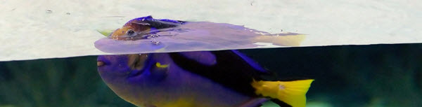
Refraction is the "bending" of light (or any electromagnetic wave) when entering a different medium.When electromagnetic waves enter a different medium the speed changes. The frequency stays the same, so the wavelength must change.
This causes the waves to change direction (except when they travel directly forward):
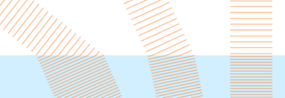
See how the distance between pulses (the wavelength) changes, but the frequency of pulses stays the same.
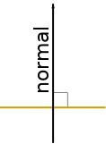

Note: the "directly forward" direction is called the Normal.
It is at right angles to the surface.
Going to a Denser Medium
The angle goes towards the normal on entering a denser medium.
Imagine marching in formation:
And then going from flat ground to a hill
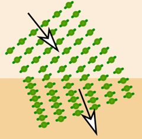
The pace slows down on one side first,
and to stay in ranks the direction must change a bit
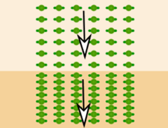
But the direction stays the same when marching straight up the hill
Going to a Less Dense Medium
The angle goes away from the normal on entering a less dense medium.
Here we see both entering and leaving a denser medium:
Towards normal on entering denser medium

Away from normal on going to less dense medium.
And because it returns to the same medium it returns to the same angle!
And here it is in real life, a ray of light being refracted in a plastic block.

The plastic is denser, so the light changes
towards normal when entering
and changes away from normal on leaving.
Courtesy of wikipedia user ajizai
And different shapes make for interesting effects:
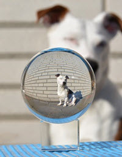
The rays bunch up around the edge
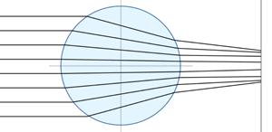
Our eyes use refraction to focus incoming light onto the back of our eye:
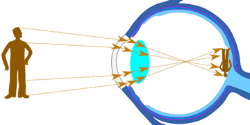
Light refracts as it goes through our eyeballs,
That focuses the light beams at the back of our eye
where nerves detect the photons.
Yes the image is upside down, but our eyes cope with that!
Refractive Index
The ratio of the speed in a vacuum to speed in the medium is called the Refractive Index (or Index of Refraction):
n = c v
where
- n is the Refractive Index
- c is the speed of light in vacuum and
- v is the speed of light in the medium
A bigger refractive index means a lower speed!
Example: the Refractive Index of water is 1.333
So light travels 1.333 times slower in water than in a vacuum
- Speed in a vacuum: 300,000 km/s
- Speed in water: 300,000 km/s / 1.333 = 225,000 km/s
Some Refractive Index values:
| Medium | Speed million m/s |
Refractive Index n |
|---|---|---|
| Vacuum | 299.8 | 1 |
| Air | 299.7 | 1.0003 |
| Ice | 228 | 1.31 |
| Water | 225 | 1.333 |
| Ethanol | 220 | 1.36 |
| Glass | 205 | 1.46 |
| Olive oil | 204 | 1.47 |
| Diamond | 123 | 2.42 |
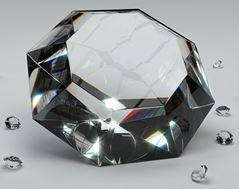
The high refractive index of diamond causes the light to bounce around inside in interesting ways.
When cut into the right shape by experts it will sparkle.
Critical Angle
At a certain angle (the Critical Angle) the ray starts to point back inside!
The result is the light reflects back instead.
It is called Total Internal Reflection:
| 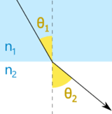 | 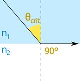 | 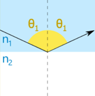 | ||
| Refraction | Critical Angle | Total Internal Reflection |
Example: Water to Air
When looking from water to air we see the (usually 180° from horizon to horizon) world above the water as a cone of about 96°.
Outside that 96° cone is a (much darker) reflection from the water below:
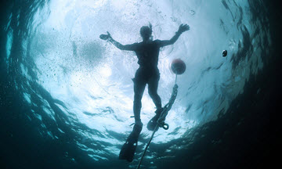
Navy Diver 2nd Class Ryan Arnold viewed from below
Note also that the water surface is not flat, so it cause a local ripple effect.
Have a play with it:
Try Refraction Index 1 = 1, Refraction Index 2 = 1.33, "Down" and "Eye" to create that effect of looking up from water.
Snell's Law
How do we calculate the angles? We use Snell's Law:
n1 sin(θ1) = n2 sin(θ2)
It works up to the critical angle, after that it is simple reflection:
| n1sin(θ1) = n2sin(θ2) | n1sin(θcrit) = n2 | θ1 = θ1 | ||
| because sin(90°)=1 | when θ1 > θcrit | |||
| Refraction | Critical Angle | Total Internal Reflection |
Example: What is the Critical Angle between air and water?
Index of Refraction of air is 1.003, and of water is 1.333
The Critical Angle is when θ2 is 90°
So θcrit = 48.8°
You may prefer this form of Snell's Law, made by dividing both sides by sin(θ1) and n2:
n1 n2 = sin(θ2) sin(θ1)
(Be careful though: n values go "1-over−2", but the sin() values go "2-over−1".)